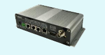
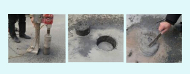

RosimWPSD-340E
The world’s smallest
Wireless parking lots occupancy detection sensor
Dual detection technology for high accuracy
Ultra long1500mtransmission range for on-street parking systems

WPSD-340E Wireless Parking Space
Detection sensor is designed to sense
parking lots occupancy information
without any cables. Due to the
integration of dual detection technology
of magnetic and optic together with a
sophisticated algorithm in a ultra-small
unit, as well as the employment of
LPLRTM low power-long rang wireless
transceiver technology, WPSD-340E
achieves an extreme high detection
accuracy and wide wireless
communication range, which provides
an high accuracy, easy installing and
cost-efficient parking lots occupancy
data collection solution for outdoor
parking management system.
-
APPLICATIONS
Parking lots management
Parking guidance system
Space Occupancy detection
Outdoor parking lots
On-street parking system
-
KEY FEATURES
1500m long range transmit
066/H79mm small size
27Ah battery 6 years lifespan
0-150cm detection range
-40~85'C work temperature
Magnetic and optic detection
All weather work condition
IP68 protection grade
99% detection accuracy
Embedded installation
-
RELATED PRODUCT
WPSD-340E is designed to
work with WDC-400x wireless
data collector to receive data
from all parking space sensors
and relay to host application.
WDC-400x
SensorViewTM software
ParkViewTM software

-
AVAILABLE MODELS
WPSD-340E3 433MHz
WPSD-340E5 915MHz
Start Kit for WPSD-340E
-
SUPPORT SERVER
Online shop :
http://rosimits.en.alibaba.com
Tel: +86-760-85313186
Fax: +86-769-85313186
Mail:Rosimits@163.com
www.rosimits.com
-
INSTALLATION
1. Drill a small hole of o7/D8cm
2. Fill it with cement to 1/2
3. Embedded WVD to finish install

 English
English 中文
中文